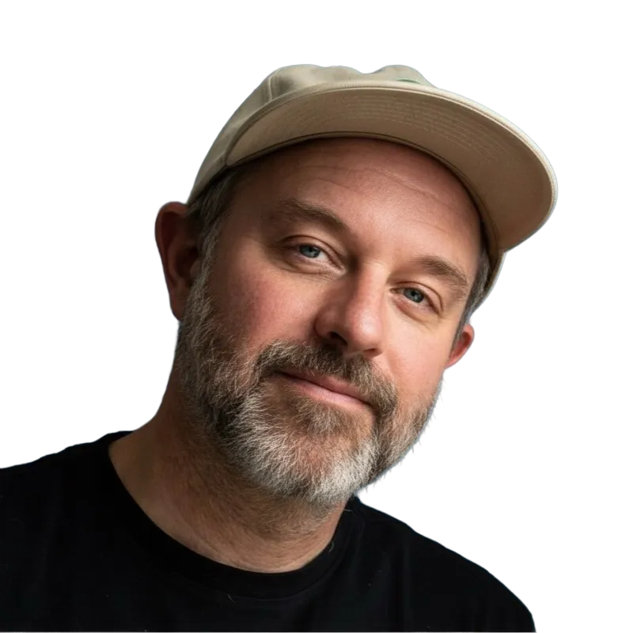

The design job market is hard right now. Not impossible — but genuinely hard. Hiring managers are spending about 12 seconds on each portfolio. Roles are competitive. And most designers are getting rejected without ever knowing why. Not because their work isn't good enough. Because no one ever told them what to change.
That's the problem I kept seeing.
According to Figma's 2026 design hiring study, demand for designers is actually on the rise — 47% of hiring managers say their need for designers has increased, and 40% plan to open new headcount in the next six months. Design job postings were up roughly 60% in 2025 compared to 2024. The market is recovering. Opportunities are opening up.
But here's the gap: designers aren't hearing that. And even if they were, a recovering market doesn't help if your portfolio isn't ready for it.
Most designers have never gotten honest, specific feedback on their portfolio — not from someone who's actually sat in hiring meetings and made decisions. The options are peer feedback that's too kind, blog posts that are too generic, or a $999 video audit that takes a week.
The tool I'm building will use AI because it's the only way to deliver personalized feedback at scale — specific to your role, level, and target companies. Trained on real hiring criteria and two decades of my own experience, it gives every designer access to the kind of feedback that used to require knowing the right people.
And yes — I'm aware of the irony of using AI to help designers in a market AI is reshaping. But the feedback gap existed long before AI did.
I want to build something better.
Take survey to help me →of designers have never received honest, specific feedback on their portfolio.

I'm Lance Shields. I've spent 20+ years working as a designer and design leader — building products, leading teams, and helping companies figure out where design fits in the bigger picture.
These days I work as a fractional design leader, which means I step into companies as their head of design — without the full-time commitment. I've reviewed hundreds of portfolios. I've made hiring decisions. I know what actually gets designers to the next round and what quietly disqualifies them before anyone picks up the phone.
Dreaming in Design is my attempt to make that knowledge available to more designers — not just the ones who happen to know the right people or can afford expensive coaching.
The tool is AI-powered, but it's built on real criteria. The kind of things I actually look for. Specific, level-appropriate, honest feedback — tailored to the role you're going after.
The market is coming back. Your portfolio should be ready when it does.
— Lance Shields · Fractional Design Leader · www.lanceshields.design
We're building this now. Sign up for early access and you'll be first to try it — free — before we launch publicly. Your feedback will shape the tool.